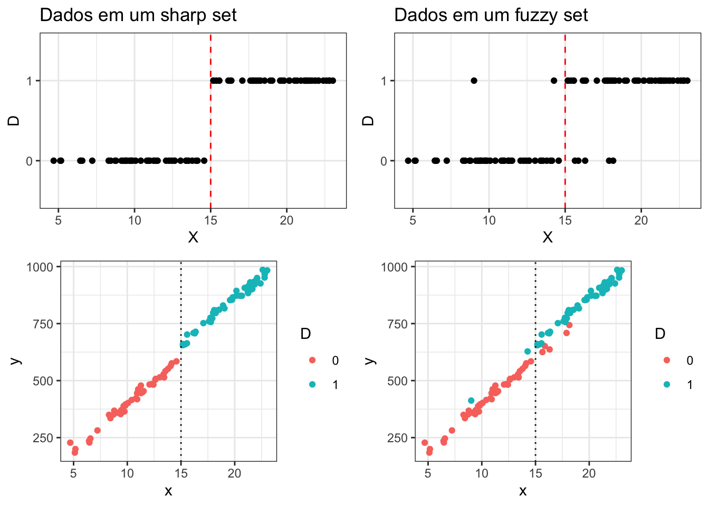
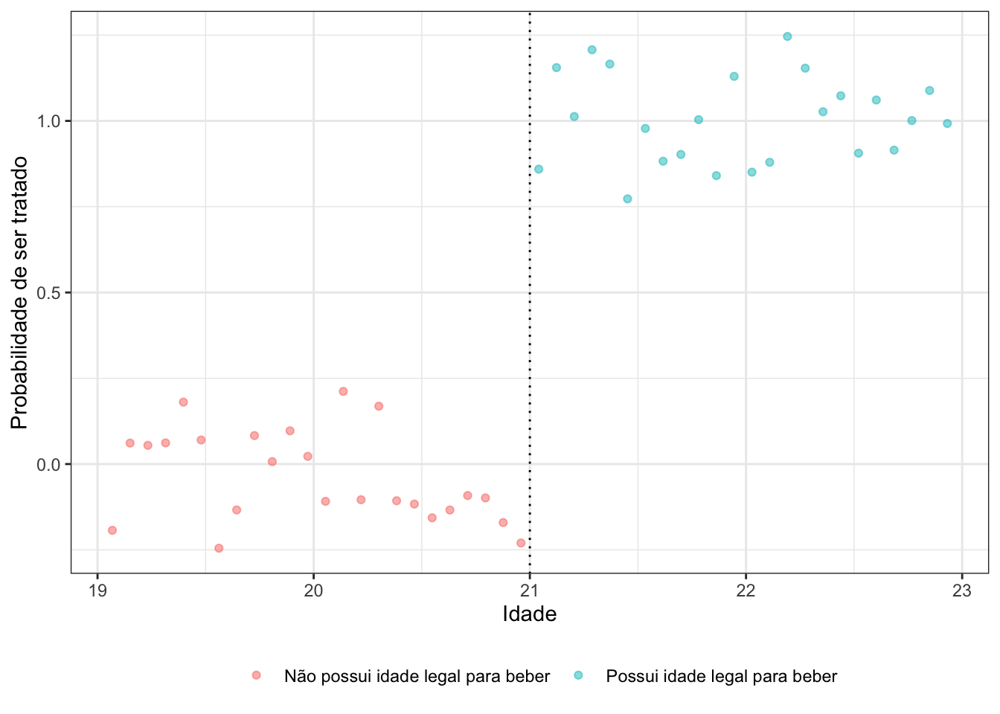
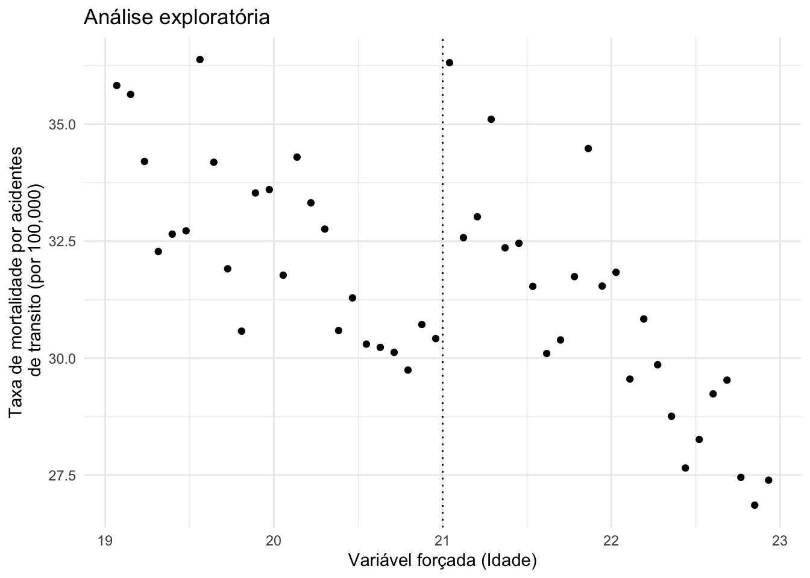
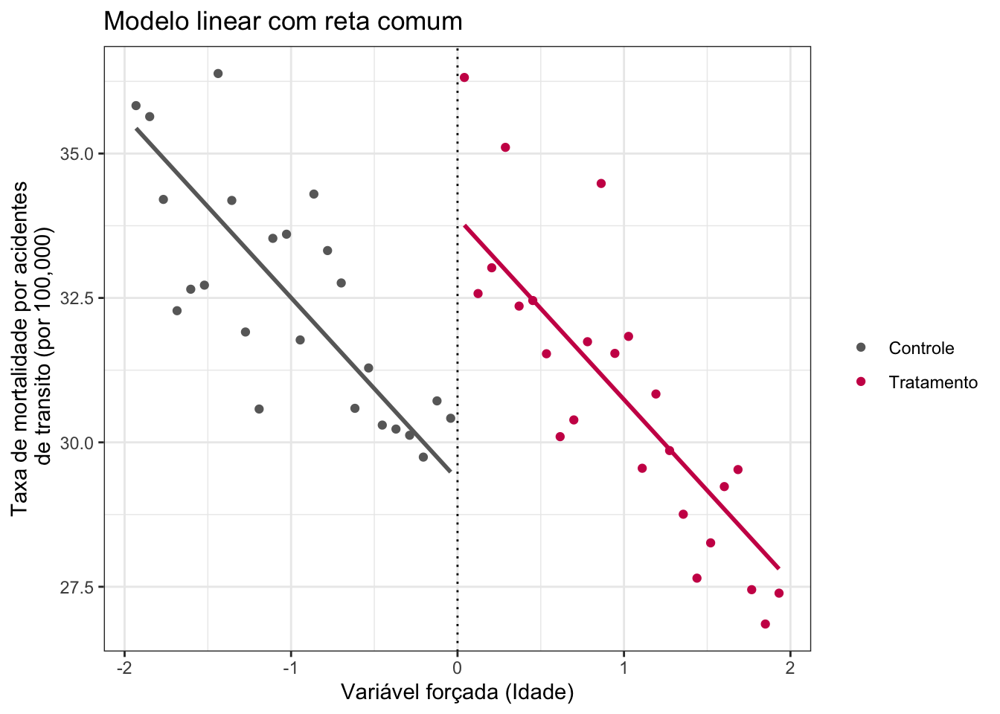
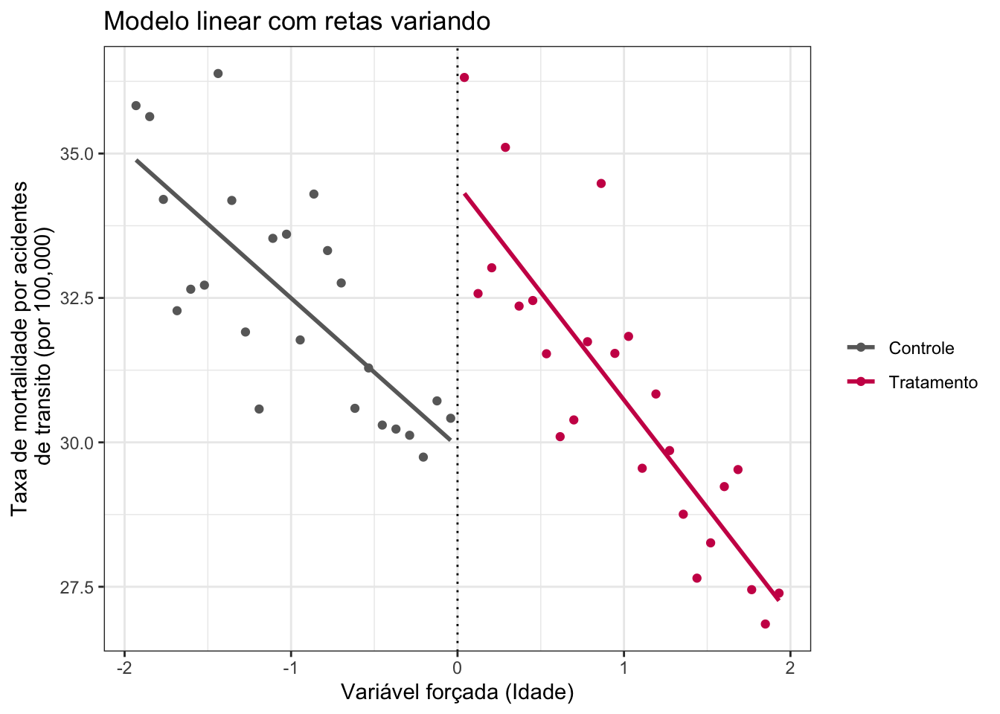
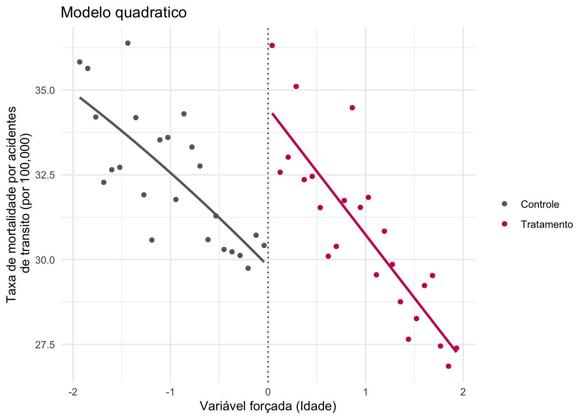
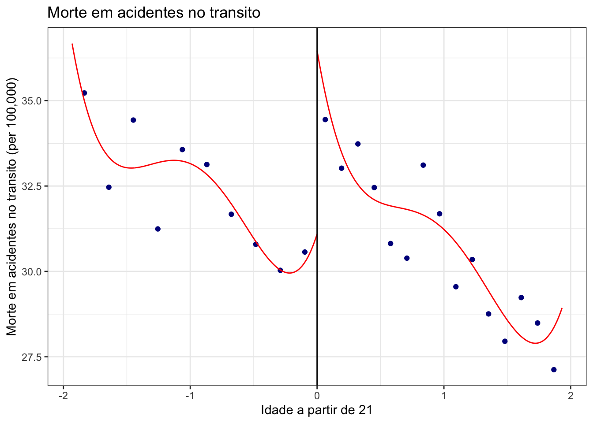

João Cardoso L. Camargos (revisão: João Paulo Dellasta)
1 Regressão com Descontinuidade
Esta aula demonstra a utilização de modelos de Regressão com Descontinuidade (RDD). Utilizaremos como exemplo os dados de Carpenter e Dobkin (2011) sobre o efeito da idade mínima legal para beber sobre as mortes em acidentes de trânsito. O material é baseado na disciplina de Métodos Quantitativos (MQ) de 2023 e no tutorial de Munzert (2021).
Pergunta de pesquisa: qual o impacto de atingir a idade legal para beber álcool sobre o número de mortes no trânsito?
Em um esforço para lidar com os problemas sociais e de saúde pública associados ao consumo de álcool por menores de idade, um grupo de presidentes de universidades americanas fez lobby junto aos estados para que o limite mínimo legal de idade para consumir álcool (MLDA, na sigla em inglês) retorne ao limiar da era do Vietnã, que era de 18 anos. A teoria por trás desse esforço (conhecido como Iniciativa Amethyst) é que permitir o consumo legal de álcool a partir dos 18 anos desencoraja o consumo excessivo e promove uma cultura de consumo maduro de bebidas alcoólicas. Isso contrasta com a visão tradicional de que o MLDA de 21 anos, embora uma ferramenta direta e imperfeita, reduz o acesso dos jovens ao álcool, prevenindo assim alguns danos. Angrist e Pischke (2014).
Para responder a pergunta Carpenter e Dobkin (2011) buscaram dados nos Estados Unidos, em que a idade para dirigir começa aos 16 anos mas o consumo de bebida só é legalizado a partir dos 21 anos. Assim, se torna uma oportunidade para a aplicação de RDD a fim de avaliar o impacto da MLDA nas mortes no trânsito.
# Pacotes utilizadoslibrary(tidyverse)library(rdrobust)library(readr)library(sjPlot)library(broom)set.seed(42)# Download do banco de dados (salvo em dados/ na primeira vez que o código roda)arquivo_mlda <-"../../dados/mlda.csv"if (!file.exists(arquivo_mlda)) {download.file("https://raw.githubusercontent.com/seramirezruiz/stats-ii-lab/master/Session%206/data/mlda.csv",destfile = arquivo_mlda)}mlda_df <- readr::read_csv(arquivo_mlda)mlda_df <- mlda_df |>select(c(outcome, agecell, treatment, forcing))sample_n(mlda_df, 5) |>tab_df(title ="Estrutura do banco")
Estrutura do banco
outcome
agecell
treatment
forcing
31.83
22.03
1
1.03
35.83
19.07
0
-1.93
36.32
21.04
1
0.04
30.58
19.81
0
-1.19
31.54
21.95
1
0.95
No banco exposto, a variável \(outcome\) é o número de mortes no trânsito por 100 mil habitantes, \(agecell\) é a faixa de idade, \(treatment\) indica que a faixa é maior do que 21 anos e \(forcing\) é a idade centralizada em 21 anos (idade − 21, variando entre −2 e 2), que é a variável de atribuição. Podemos imaginar que a variável \(D\) define o recebimento ou não do tratamento, de modo que:
\(D = 1\) se \(X\geq c\)
\(D = 0\) se \(X< c\)
Em que \(X\) é a variável de atribuição e \(c\) é o ponto de corte. A RDD é baseada em uma hipótese central:
Hipótese de continuidade: todos os outros fatores (que não \(D\)) variam de maneira suave (contínua) em torno de \(c\); nada além do tratamento muda abruptamente no corte.
Formalmente, ela pode ser escrita de duas formas (a segunda é mais forte):
Continuidade das médias condicionais: \(E[Y(0) \mid X = x]\) e \(E[Y(1) \mid X = x]\) são contínuas em \(x\).
Continuidade das distribuições condicionais: \(F_{Y(0)|X}(y \mid x)\) e \(F_{Y(1)|X}(y \mid x)\) são contínuas em \(x\) para todo \(y\).
É razoável supor que o comportamento dos indivíduos entre 19 e 23 anos não sofre grandes alterações, devido à proximidade da idade, a não ser pelo acesso legal ao álcool aos 21. O passo seguinte é determinar o tipo de desenho. Caso \(c\) seja claro, ou seja um ponto específico marque o corte e nada antes dele receba o tratamento e todos depois dele recebam, temos um modelo com o set up de um modelo \(sharp\). Se a linha de corte não é clara, ou seja, existam individuos que recebem e não recebem o tratamento na mesma etapa, temos um setup \(fuzzy\).
library(tidyverse)library(gridExtra)# Criando a base de dados simulada com mais pontosdata_fuzzy <-tibble(d =c(rep(0, 50), rep(1, 50)),x =c(rnorm(40,10, 2),rnorm(20,15,2),rnorm(40,20, 2)),eps =rnorm(100,0,15),y = x*40+ d*60+ eps)# Visualização Fuzzy setg1 <-ggplot(data_fuzzy, aes(x = x, y =as.factor(d))) +geom_point() +geom_vline(xintercept =15, color ="red", linetype ="dashed") +labs(x ="X", y ="D", title ="Dados em um fuzzy set")+theme_bw()g1.1<-ggplot(data_fuzzy, aes(x = x, y = y, color =as.factor(d))) +geom_point() +geom_vline(xintercept =15, linetype ="dotted") +theme_bw()+labs(color ="D")# Visualização Sharp setg2 <- data_fuzzy |> dplyr::filter(x >15& d==1|x <15& d==0) |>ggplot(aes(x = x, y =as.factor(d))) +geom_point() +geom_vline(xintercept =15, color ="red", linetype ="dashed") +labs(x ="X", y ="D", title ="Dados em um sharp set")+theme_bw()g2.1<- data_fuzzy |> dplyr::filter(x >15& d==1|x <15& d==0) |>ggplot(aes(x = x, y = y, color =as.factor(d))) +geom_point() +geom_vline(xintercept =15, linetype ="dotted") +labs(color ="D")+theme_bw()grid.arrange(g2,g1,g2.1,g1.1, ncol =2)

O primeiro passo é avaliar se aplicaremos uma RDD do tipo \(sharp\) ou do tipo \(fuzzy\). No caso, o corte na lei é claro, legalizando o consumo de alcool no momento em que o indivíduo completou 21 anos. Podemos visualizar a probabilidade de se encaixar no tratamento a partir do seguinte gráfico:
ggplot(mlda_df, aes(x = agecell, y = treatment,color =factor(treatment))) +geom_point(size =1.5, alpha =0.5,position =position_jitter(width =0, height =0.25, seed =1234)) +labs(x ="Idade", y ="Probabilidade de ser tratado") +scale_color_discrete(name =" ", labels =c("Não possui idade legal para beber", "Possui idade legal para beber")) +geom_vline(xintercept =21, linetype ="dotted") +theme_bw()+theme(legend.position ="bottom")

Assim, o uso de uma RDD \(sharp\) é o indicado. A partir disso, analisaremos então o comportamento dos dados a fim de entender qual modelo melhor capturará a variação dos dados.
ggplot(mlda_df, aes(x = agecell, y = outcome)) +geom_point() +geom_vline(xintercept =21, linetype ="dotted") +labs(title ="Análise exploratória",x ="Variável forçada (Idade)",y ="Taxa de mortalidade por acidentes\n de transito (por 100,000)") +theme_minimal()

Assumindo inicialmente que a relação entre \(X\) e \(Y\) seja linear, podemos estimar o efeito do tratamento \(\tau\) por meio da seguinte regressão linear:
\[Y = \alpha + \tau D + \beta X + \epsilon\]
Aqui, \(\beta\) captura a relação (suave) entre a variável de atribuição e o resultado, e \(\tau\) captura o “salto” de \(Y\) exatamente no ponto de corte, que é o efeito causal do tratamento. Para interpretar \(\tau\) como efeito causal, é necessário que todos os outros fatores que afetam \(Y\) variem suavemente com \(X\); caso contrário, \(\tau\) será estimado com viés. Também precisamos que a forma funcional esteja correta: se a relação verdadeira for curva e ajustarmos uma reta, parte da curvatura pode ser confundida com um salto. Assim, primeiramente, rodaremos um modelo linear com retas comuns. Observe que a variável \(forcing\) é CENTRALIZADA em 0 (idade 21) e representa a distância em anos a partir dos 21 anos, enquanto o tratamento é apenas binário, acima/abaixo de 21 anos.
linear_common_slope <-lm(outcome ~ treatment + forcing, data = mlda_df)linear_common_slope |>tab_model()
outcome
Predictors
Estimates
CI
p
(Intercept)
29.36
28.49 – 30.22
<0.001
treatment
4.53
2.99 – 6.08
<0.001
forcing
-3.15
-3.83 – -2.47
<0.001
Observations
48
R2 / R2 adjusted
0.703 / 0.689
De acordo com nossas suposições para modelos lineares com inclinação comum, consideramos que o efeito do tratamento não depende da variável de forçamento. Podemos formalizar esse modelo da seguinte forma:
Portanto, podemos afirmar que, com base em nosso \(\beta_1\), podemos esperar 4,53 mortes adicionais por acidentes de trânsito a cada 100.000 pessoas para aqueles que podem legalmente consumir bebidas alcoólicas. Também observamos que, para cada ano de aumento na idade, o número de mortes esperadas por 100.000 pessoas diminui em 3,15 (\(\beta_2\)). Podemos extrair os valores preditos a fim de recriar o fit. Uma das melhores formas de visualizar os resultados é dividindo o gráfico em dois lados do corte e plotar as linhas da regressão em ambos os casos:
mlda_df$yhat_linear <-predict(linear_common_slope) # Criando uma variável com o modelo predito. mlda_df %>%ggplot(aes(x = forcing, y = yhat_linear, col =factor(treatment))) +geom_point(aes(x = forcing, y = outcome,col =factor(treatment))) +geom_vline(xintercept =0, linetype ="dotted") +labs(title ="Modelo linear com reta comum",x ="Variável forçada (Idade)",y ="Taxa de mortalidade por acidentes\n de transito (por 100,000)") +geom_line(data = mlda_df[mlda_df$forcing >=0,], color ="#cc0055",linewidth =1) +geom_line(data = mlda_df[mlda_df$forcing <0,], color ="#696969", linewidth =1) +scale_color_manual(name ="",values =c("#696969", "#cc0055"),labels =c("Controle", "Tratamento")) +theme_bw()

Agora, reestimaremos essa regressão permitindo que haja variação entre as retas da regressão. Isso pode ser feito por meio da introdução de um termo interativo no modelo.
linear_different_slope <-lm(outcome ~ treatment*forcing, data = mlda_df)linear_different_slope |>tab_model()
outcome
Predictors
Estimates
CI
p
(Intercept)
29.93
28.86 – 31.00
<0.001
treatment
4.53
3.02 – 6.05
<0.001
forcing
-2.57
-3.51 – -1.63
<0.001
treatment × forcing
-1.16
-2.49 – 0.17
0.085
Observations
48
R2 / R2 adjusted
0.722 / 0.703
Portanto, podemos afirmar que, dado \(\beta_1\), podemos esperar 4,53 mortes adicionais por acidentes de veículos a cada 100.000 pessoas para aqueles que podem legalmente consumir bebidas alcoólicas no limite de idade. Agora temos duas inclinações diferentes para mudanças na idade. Para indivíduos com menos de 21 anos, um aumento de um ano na idade resultaria, em média, em 2,57 mortes a menos por acidentes de veículos (\(\beta_2\)). Para aqueles que têm idade legal para beber, esperaríamos 3,73 mortes a menos por 100.000 pessoas para cada aumento de um ano na idade (\(\beta_2 + \beta_3 = -2,57 + (-1,16) = -3,73\)). Além disso, o modelo se adequou um pouco melhor aos dados, com um \(R^2\) de 0,722, sendo 0,019 maior que o modelo anterior.
mlda_df %>%ggplot(aes(x = forcing, y = outcome, col =factor(treatment))) +geom_point() +geom_vline(xintercept =0, linetype ="dotted") +geom_smooth(method ="lm", se = F) +labs(title ="Modelo linear com retas variando",x ="Variável forçada (Idade)",y ="Taxa de mortalidade por acidentes\n de transito (por 100,000)")+scale_color_manual(name ="",values =c("#696969", "#cc0055"),labels =c("Controle", "Tratamento")) +theme_bw()

Podemos também permitir que a relação entre \(X\) e \(Y\) seja curva (não linear) e diferente de cada lado do corte. No caso, estimaremos um modelo com termos quadráticos e suas interações com o tratamento. O modelo é especificado da seguinte forma:
quadratic <-lm(outcome ~ forcing +I(forcing^2) +# I tells R to interpret "as is" treatment +I(forcing * treatment) +I((forcing^2) * treatment),data = mlda_df)quadratic |>tidy() |>tab_df()
term
estimate
std.error
statistic
p.value
(Intercept)
29.81
0.82
36.51
0.00
forcing
-2.93
1.91
-1.53
0.13
I(forcing^2)
-0.19
0.94
-0.20
0.84
treatment
4.66
1.15
4.04
0.00
I(forcing * treatment)
-0.82
2.71
-0.30
0.76
I((forcing^2) * treatment)
0.20
1.33
0.15
0.88
Portanto, podemos dizer que, considerando nosso \(\tau\), podemos esperar 4,66 mortes adicionais por acidentes de veículos a cada 100.000 pessoas para aqueles que podem legalmente consumir bebidas alcoólicas no limite de idade. Também poderíamos calcular o valor esperado de \(Y\) em diferentes níveis de \(X\).
Digamos que queiramos saber qual é o valor esperado para pessoas de 23 anos. Como nossa variável de forçamento é 0 aos 21 anos de idade, podemos considerar 23 como 2. Além disso, pessoas de 23 anos estão acima da idade legal mínima para beber, portanto, para elas, o valor de \(D\) é 1.
Com base nisso, esperaríamos uma taxa de mortalidade por acidentes de veículos de 27,01 a cada 100.000 pessoas para pessoas de 23 anos. Podemos plotar os resultados do modelo.
mlda_df$yhat_quadratic <-predict(quadratic) mlda_df %>%ggplot(aes(x = forcing, y = yhat_quadratic, #note predicted ycol =factor(treatment))) +geom_point(aes(x = forcing, y = outcome, col =factor(treatment))) +geom_vline(xintercept =0, linetype ="dotted") +labs(title ="Modelo quadratico",x ="Variável forçada (Idade)",y ="Taxa de mortalidade por acidentes\n de transito (por 100,000)") +geom_line(data = mlda_df[mlda_df$forcing >=0,], color ="#cc0055", linewidth =1) +geom_line(data = mlda_df[mlda_df$forcing <0,], color ="#696969", linewidth =1) +scale_color_manual(name ="",values =c("#696969", "#cc0055"),labels =c("Controle", "Tratamento")) +theme_minimal()

Por fim, podemos estimar o efeito do tratamento no ponto de corte (efeito local, válido para quem está perto dos 21 anos) com uma regressão polinomial local, que usa apenas as observações dentro de uma janela (bandwidth) escolhida automaticamente, dá mais peso a quem está perto do corte e corrige o viés da aproximação.
llr <- rdrobust::rdrobust(mlda_df$outcome, mlda_df$forcing, c =0,kernel ="tri",bwselect ="mserd")summary(llr)
Sharp RD estimates using local polynomial regression.
Number of Obs. 48
BW type mserd
Kernel Triangular
VCE method NN
Number of Obs. 24 24
Eff. Number of Obs. 6 6
Order est. (p) 1 1
Order bias (q) 2 2
BW est. (h) 0.487 0.487
BW bias (b) 0.738 0.738
rho (h/b) 0.660 0.660
Unique Obs. 24 24
=============================================================================
Method Coef. Std. Err. z P>|z| [ 95% C.I. ]
=============================================================================
Conventional 4.901 2.059 2.380 0.017 [0.864 , 8.937]
Robust - - 1.881 0.060 [-0.198 , 9.674]
=============================================================================
A estimativa convencional é de cerca de 4,9 mortes adicionais por 100 mil habitantes, significativa a 5% (p ≈ 0,02). O intervalo robusto com correção de viés, mais conservador, é mais largo e inclui o zero (p ≈ 0,06), o que é esperado com apenas 48 observações (células de idade). A conclusão é coerente com os modelos paramétricos: atingir a idade legal para beber aumenta as mortes no trânsito, embora a precisão da estimativa local seja limitada. Podemos plotar esses resultados da seguinte forma:
rdplot(mlda_df$outcome, mlda_df$forcing, c =0,kernel ="tri",title ="Morte em acidentes no transito",x.label ="Idade a partir de 21",y.label ="Morte em acidentes no transito (per 100,000)")

2 Limitações do método
Apesar de ser uma poderosa técnica para inferência causal, a RDD possui algumas limitações que desafiam sua validade interna e externa.
Validade interna: assumimos que todos os fatores não observáveis variam de forma contínua em torno do corte, e essa premissa não pode ser testada diretamente. Podemos, porém, reunir evidências indiretas: verificar se as covariáveis observáveis são contínuas no corte e se há manipulação da variável de atribuição (teste de densidade de McCrary). Por isso é essencial entender como \(X\) foi determinado.
Validade externa: Devido ao desenho para um efeito local, não é possível inferir os resultados para populações fora do entorno do ponto de corte.
Recomendações para a implementação de uma RDD:
Mostrar a distribuição de variáveis de confusão em função de \(X\)
Apresente os principais gráficos de RD usando médias locais
Caso use uma especificação polinomial, faça o gráfico
Mostre a sensibilidade dos resultados a diferentes escolhas de \(h\) (bandwidth) e da ordem do polinômio
Estime a RDD também para as covariáveis (que não deveriam “saltar” no corte)
Mostre a sensibilidade dos resultados em relação a introdução de variáveis controle.